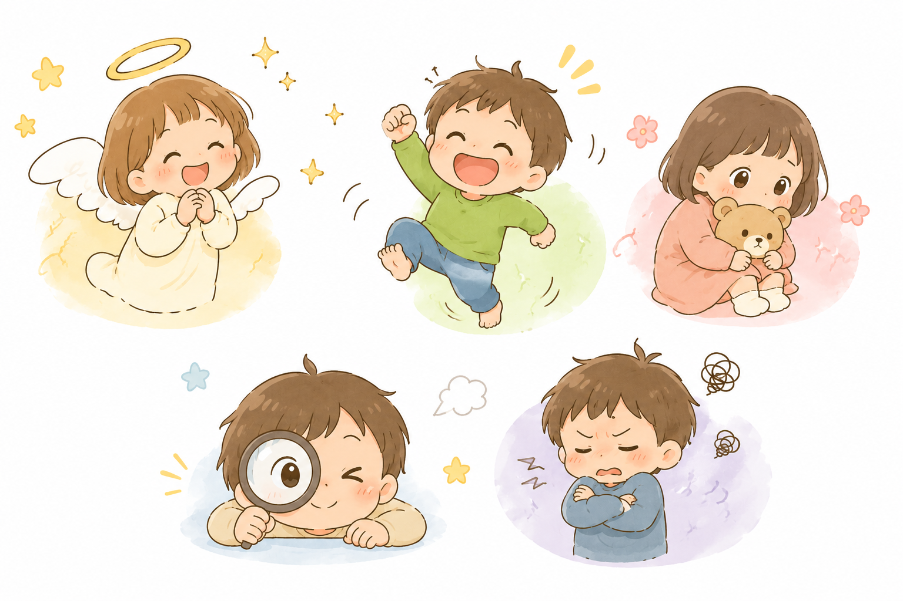

<!DOCTYPE html>
<html lang="ja">
<head>
  <meta charset="UTF-8">
  <meta name="viewport" content="width=device-width, initial-scale=1.0, viewport-fit=cover">
  <title>子どもの気質チェック</title>

  <!-- PWA -->
  <link rel="manifest" href="./manifest.json">
  <meta name="theme-color" content="#FF6BAE">
  <meta name="mobile-web-app-capable" content="yes">
  <meta name="apple-mobile-web-app-capable" content="yes">
  <meta name="apple-mobile-web-app-status-bar-style" content="default">
  <meta name="apple-mobile-web-app-title" content="気質チェック">
  <link rel="apple-touch-icon" href="./icon.svg">

  <script src="https://unpkg.com/react@18/umd/react.production.min.js"></script>
  <script src="https://unpkg.com/react-dom@18/umd/react-dom.production.min.js"></script>
  <script src="https://unpkg.com/@babel/standalone/babel.min.js"></script>
  <style>
    * { box-sizing: border-box; margin: 0; padding: 0; }

    body {
      font-family: -apple-system, BlinkMacSystemFont, "Hiragino Kaku Gothic ProN", "Yu Gothic", "Noto Sans JP", sans-serif;
      background: linear-gradient(160deg, #FFF5F8 0%, #F5F0FF 50%, #F0F8FF 100%);
      min-height: 100vh;
      padding: 16px 16px 60px;
      color: #333;
    }

    #root { max-width: 560px; margin: 0 auto; }

    button { cursor: pointer; font-family: inherit; }

    .card {
      background: #fff;
      border-radius: 20px;
      padding: 20px;
      box-shadow: 0 2px 16px rgba(0,0,0,0.07);
      margin-bottom: 14px;
    }

    .btn-primary {
      background: linear-gradient(135deg, #FF9A76, #FF6BAE);
      color: white;
      border: none;
      border-radius: 50px;
      padding: 15px 32px;
      font-size: 16px;
      font-weight: 700;
      width: 100%;
      transition: opacity 0.2s, transform 0.1s;
      letter-spacing: 0.03em;
    }
    .btn-primary:hover { opacity: 0.92; }
    .btn-primary:active { transform: scale(0.98); }
    .btn-primary:disabled {
      background: #D0D0D0;
      cursor: not-allowed;
      opacity: 1;
    }

    .progress-wrap {
      background: #EBEBEB;
      border-radius: 10px;
      height: 8px;
    }
    .progress-fill {
      height: 100%;
      border-radius: 10px;
      background: linear-gradient(90deg, #FF9A76, #FF6BAE);
      transition: width 0.5s cubic-bezier(0.4,0,0.2,1);
    }

    .ans-btn {
      flex: 1;
      border: 2px solid #E5E5E5;
      background: #FAFAFA;
      border-radius: 14px;
      padding: 10px 6px;
      font-size: 11.5px;
      font-family: inherit;
      text-align: center;
      line-height: 1.4;
      transition: all 0.15s;
      color: #555;
    }
    .ans-btn:hover { border-color: #CCC; background: #F5F5F5; }
    /* ✕ 当てはまらない */
    .ans-sel-0 { background: #FFF0F0 !important; border-color: #E05050 !important; color: #B03030 !important; font-weight: 700; }
    /* △ どちらとも */
    .ans-sel-1 { background: #FFF7DC !important; border-color: #F5B800 !important; color: #7A5A00 !important; font-weight: 700; }
    /* ○ 当てはまる */
    .ans-sel-2 { background: #EDFBF4 !important; border-color: #3BAC7A !important; color: #1E6B48 !important; font-weight: 700; }

    @keyframes fadeUp {
      from { opacity: 0; transform: translateY(18px); }
      to   { opacity: 1; transform: translateY(0); }
    }
    .fade-up { animation: fadeUp 0.4s ease both; }

    @keyframes barGrow {
      from { width: 0 !important; }
    }
    .bar-anim { animation: barGrow 0.7s cubic-bezier(0.4,0,0.2,1) both; }

    .hero-img {
      width: 100%;
      max-width: 400px;
      border-radius: 20px;
      margin-bottom: 8px;
      display: block;
    }
  </style>
</head>
<body>
<div id="root"></div>

<script type="text/babel">
const { useState, useEffect } = React;

/* ─────────────────────────────────────────
   データ定義
───────────────────────────────────────── */

const CATEGORIES = [
  {
    name: "活動レベル",
    icon: "🏃",
    desc: "じっとしているより、体を動かしていることが多い",
    qs: [
      "家の中でも、歩いたり動いたりしていることが多い",
      "静かに座っているより、体を使う遊びを好む",
      "食事や着替えなども、さっと終わらせたい様子がある",
      "思いついたら、すぐに動き出すことが多い",
      "休憩中でも、手や足を動かしていることがある",
    ],
  },
  {
    name: "新しいことへの反応",
    icon: "🆕",
    desc: "初めての場所や人に、最初は慎重になりやすい",
    qs: [
      "初めての場所では、すぐに入っていかず様子を見る",
      "初対面の人に、打ち解けるまで時間がかかる",
      "新しい遊びや活動は、最初は少しためらう",
      "慣れた環境のほうが安心して力を出しやすい",
      "変化のある場面では、まず観察してから動く",
    ],
  },
  {
    name: "順応性",
    icon: "🔄",
    desc: "予定変更があると、切り替えに時間がかかる",
    qs: [
      "予定が変わると、気持ちの切り替えに時間がかかる",
      "いつもと違うやり方は、すぐには受け入れにくい",
      "流れが決まっているほうが落ち着きやすい",
      "自分の想定と違うことが起きると、戸惑いやすい",
      "先に見通しがあると、スムーズに動ける",
    ],
  },
  {
    name: "反応の強さ",
    icon: "💬",
    desc: "うれしい時も怒る時も、感情が出やすい",
    qs: [
      "うれしい時の反応が大きい",
      "いやなことがあると、感情が強く出やすい",
      "ふつうの声かけでも、受け取り方が強めになることがある",
      "何か気になると、表情や言葉に出やすい",
      "気持ちが動くと、体や声にも出やすい",
    ],
  },
  {
    name: "気分の質",
    icon: "😊",
    desc: "ふだんは明るく、前向きに過ごすことが多い",
    qs: [
      "ふだんは機嫌よく過ごしていることが多い",
      "小さなことでは、あまりへこまない",
      "いやなことがあっても、気持ちを切り替えやすい",
      "楽しいことを見つけるのが上手",
      "全体として、前向きな空気がある",
    ],
  },
  {
    name: "注意の持続",
    icon: "🎯",
    desc: "好きなことには長く集中しやすい",
    qs: [
      "好きなことを始めると、長く続けやすい",
      "集中している時は、周りのことがあまり気にならない",
      "興味があることには、かなり没頭する",
      "細かい作業でも、気に入れば続けられる",
      "中断されても、また戻れば再開しやすい",
    ],
  },
  {
    name: "注意の切り替え",
    icon: "🔀",
    desc: "今やっていることをやめて、次に移るのが苦手",
    qs: [
      "今の活動をやめるのに、時間がかかる",
      "別のことを始めるときに、嫌がることがある",
      "声をかけても、切り替えにひと呼吸いる",
      "途中で終えることが苦手",
      "次の予定へ移る前に、予告があると動きやすい",
    ],
  },
  {
    name: "感覚の敏感さ",
    icon: "🌸",
    desc: "音、光、におい、服の感触などに敏感",
    qs: [
      "大きな音や強い光が苦手",
      "服のタグや素材が気になりやすい",
      "においや食感にこだわりがある",
      "ちょっとした刺激でも、疲れやすい",
      "まわりがうるさいと、集中しにくい",
    ],
  },
  {
    name: "継続強さ",
    icon: "💪",
    desc: "うまくいかなくても、やり直して続けやすい",
    qs: [
      "失敗しても、やり直そうとする",
      "難しくても、すぐにはあきらめない",
      "興味があることは、長く続けやすい",
      "一度決めたことを、粘って続ける",
      "納得すると、最後までやり切ろうとする",
    ],
  },
];

const TYPES = {
  angel: {
    name: "エンジェルタイプ",
    emoji: "😇",
    color: "#E0307A",
    bg: "#FFF0F6",
    bar: "#FF6BAE",
    summary: "穏やか・安定・なじみやすい",
    desc: "穏やかで、全体的に育てやすく見えやすいタイプです。機嫌が安定していて、初めてのことにも比較的なじみやすい傾向があります。一方で気づかれにくいので、強みが見逃されやすいこともあります。",
    basePhrase: "「まずは1個だけやってみよう」",
    phrases: [
      "「これならできそうだね。」",
      "「1回やってみたら終わりにしよう。」",
      "「ゆっくりで大丈夫だよ。」",
      "「気づけてえらいね。」",
      "「そのやり方、いいね。」",
    ],
    notes: [
      "穏やかなので、できていても見逃されやすいです",
      "細かな成長を言葉にして返すことが大切です",
      "比較されると意欲が下がりやすいことがあります",
      "目立たない努力を見つけて返すと伸びます",
    ],
    score: (s) => (s[4] + (10 - s[1]) + s[2]) / 30,
  },
  text: {
    name: "テキストタイプ",
    emoji: "📚",
    color: "#1E7A54",
    bg: "#F0FBF6",
    bar: "#3BAC7A",
    summary: "理解が早い・きちんとしたい・ルール重視",
    desc: "理解が早く、きちんとやりたい気持ちが強いタイプです。ルールや順番がわかると力を発揮しやすいです。その反面、完璧主義や、納得できないと進みにくさが出ることがあります。",
    basePhrase: "「どうしたらうまくいくと思う？」",
    phrases: [
      "「どこがポイントだと思う？」",
      "「自分のやり方を考えてみよう。」",
      "「できた理由を教えて。」",
      "「順番を整理してみようか。」",
      "「どうすればもっとよくなるかな。」",
    ],
    notes: [
      "納得できないと動きにくいので、先に理由を伝えるとよいです",
      "急かすより、考える時間を確保しましょう",
      "うまくいった過程を認める声かけが合います",
      "細かく評価しすぎると、完璧主義が強まることがあります",
    ],
    score: (s) => (s[5] + s[8] + s[2]) / 30,
  },
  active: {
    name: "アクティブタイプ",
    emoji: "⚡",
    color: "#C05800",
    bg: "#FFF8F0",
    bar: "#FF9A40",
    summary: "行動が早い・好奇心旺盛・勢いがある",
    desc: "元気で行動が早く、思いついたらすぐに動くタイプです。好奇心が強く、勢いがあります。その一方で、切り替えや待つことが苦手になりやすいです。",
    basePhrase: "「先にこれ、終わったら次ね」",
    phrases: [
      "「先に順番を決めよう。」",
      "「3つ終わったら休憩しよう。」",
      "「動いてから落ち着く時間を作ろう。」",
      "「今はこれ、次はこれね。」",
      "「やりたい気持ちはOK。だから順番を整えよう。」",
    ],
    notes: [
      "止めるより、流れを作る方がうまくいきます",
      "先に終わりを見せると、切り替えやすくなります",
      "体を動かす時間を入れると落ち着きやすいです",
      "先回りして禁止しすぎないことが大切です",
    ],
    score: (s) => (s[0] + s[3]) / 20,
  },
  delicate: {
    name: "デリケートタイプ",
    emoji: "🌷",
    color: "#6030B0",
    bg: "#FAF5FF",
    bar: "#9B60D8",
    summary: "感受性豊か・敏感・丁寧な関わりで伸びる",
    desc: "感受性が豊かで、人の気持ちや環境の変化に敏感なタイプです。やさしくて、丁寧に関わると伸びやすいです。ただし、刺激に疲れやすかったり、初めての場面で慎重になりやすかったりします。",
    basePhrase: "「最初は見ているだけでもいいよ」",
    phrases: [
      "「最初は見ているだけでもいいよ。」",
      "「気になるなら場所を変えよう。」",
      "「今日はここまでで十分だよ。」",
      "「音が気になるなら、静かなところに行こう。」",
      "「慣れるまでゆっくりで大丈夫。」",
    ],
    notes: [
      "「気にしすぎ」と片づけないことが大切です",
      "刺激に疲れやすいので、環境調整が先です",
      "安心があると、力を出しやすいです",
      "感情の揺れを否定せず、受けとめる関わりが合います",
    ],
    score: (s) => (s[1] + s[7] + s[3]) / 30,
  },
  negative: {
    name: "ネガティブタイプ",
    emoji: "🔒",
    color: "#1560A8",
    bg: "#F0F7FF",
    bar: "#4090D8",
    summary: "こだわり強い・粘り強い・納得が大切",
    desc: "こだわりが強く、慎重で、粘り強いタイプです。一見むずかしく見えても、責任感や継続力が強みになりやすいです。納得しないと動きにくいので、理由や見通しがとても大切です。",
    basePhrase: "「理由を先に伝えるね」",
    phrases: [
      "「これはこういう理由でやるよ。」",
      "「納得できる形を一緒に考えよう。」",
      "「まず見通しを伝えるね。」",
      "「自分で選べる部分もあるよ。」",
      "「やり方を決めたら進めやすくなるね。」",
    ],
    notes: [
      "無理やり動かすと、反発が強くなりやすいです",
      "理由がない指示は通りにくいです",
      "粘り強さは大きな強みなので、否定しないこと",
      "先に納得、あとで行動、の順番が合います",
    ],
    score: (s) => (s[8] + s[1] + s[6]) / 30,
  },
};

const CAT_COLORS = [
  "#FF9A40","#9B60D8","#3BAC7A","#FF6BAE","#F5B800",
  "#44B8C8","#FF6BAE","#C070E0","#44B060",
];

function calcCatScores(answers) {
  return answers.map((row) => row.reduce((a, b) => a + b, 0));
}

function calcTypeRanking(catScores) {
  return Object.entries(TYPES)
    .map(([id, t]) => ({ id, pct: Math.round(t.score(catScores) * 100) }))
    .sort((a, b) => b.pct - a.pct);
}

/* ─────────────────────────────────────────
   スタート画面
───────────────────────────────────────── */
function StartScreen({ onStart }) {
  return (
    <div className="fade-up">
      {/* ① トップ画像 */}
      <div style={{ textAlign: "center", paddingTop: 16, marginBottom: 4 }}>
         { e.target.style.display = "none"; }}
        />
      </div>

      <div style={{ textAlign: "center", padding: "8px 8px 20px" }}>
        <h1 style={{ fontSize: 26, fontWeight: 900, color: "#333", marginBottom: 12 }}>
          子どもの気質チェック
        </h1>
        <p style={{ color: "#666", fontSize: 14.5, lineHeight: 1.8, maxWidth: 320, margin: "0 auto" }}>
          9つの項目に答えるだけで、<br />お子さんの気質タイプと合った<br />声かけがわかります。
        </p>
      </div>

      <div className="card">
        <p style={{ fontSize: 14, fontWeight: 700, color: "#555", marginBottom: 12 }}>📋 回答の選び方</p>
        <div style={{ display: "flex", flexDirection: "column", gap: 8 }}>
          {[
            ["✕", "0点", "あまり当てはまらない", "#FFF0F0", "#E05050", "#B03030"],
            ["△", "1点", "どちらともいえない",   "#FFF7DC", "#F5B800", "#7A5A00"],
            ["○", "2点", "よく当てはまる",        "#EDFBF4", "#3BAC7A", "#1E6B48"],
          ].map(([mark, score, label, bg, border, text]) => (
            <div key={score} style={{ display: "flex", alignItems: "center", gap: 12 }}>
              <span style={{
                background: bg, color: text, fontWeight: 900, fontSize: 18,
                border: `2px solid ${border}`, borderRadius: 10,
                padding: "4px 10px", minWidth: 44, textAlign: "center",
                lineHeight: 1.2,
              }}>{mark}</span>
              <span style={{ color: "#555", fontSize: 14 }}>{score}：{label}</span>
            </div>
          ))}
        </div>
        <p style={{ marginTop: 14, fontSize: 12.5, color: "#999", lineHeight: 1.8, borderTop: "1px solid #F0F0F0", paddingTop: 12 }}>
          各項目5問ずつ、全9カテゴリ（計45問）です。<br />
          ふだんのお子さんの様子を思い浮かべながら答えてください。
        </p>
      </div>

      <button className="btn-primary" onClick={onStart}>
        チェックをはじめる →
      </button>
      <p style={{ textAlign: "center", fontSize: 12, color: "#BBB", marginTop: 12 }}>
        所要時間：約5〜10分
      </p>
    </div>
  );
}

/* ─────────────────────────────────────────
   クイズ画面
───────────────────────────────────────── */
function QuizScreen({ catIdx, answers, onAnswer, onNext, onPrev }) {
  const cat = CATEGORIES[catIdx];
  const row = answers[catIdx];
  const allDone = row.every((v) => v !== -1);
  const progress = ((catIdx) / CATEGORIES.length) * 100;

  /* ③ 3択ボタン定義: ✕△○ + 色 */
  const ANS_OPTIONS = [
    { val: 0, mark: "✕", label: "当てはまらない", markColor: "#E05050" },
    { val: 1, mark: "△", label: "どちらとも",     markColor: "#D49B00" },
    { val: 2, mark: "○", label: "当てはまる",     markColor: "#3BAC7A" },
  ];

  return (
    <div className="fade-up">
      {/* プログレスバー */}
      <div style={{ marginBottom: 18 }}>
        <div style={{ display: "flex", justifyContent: "space-between", marginBottom: 6 }}>
          <span style={{ fontSize: 13, color: "#999" }}>
            カテゴリ {catIdx + 1} / {CATEGORIES.length}
          </span>
          <span style={{ fontSize: 13, fontWeight: 700, color: "#FF6BAE" }}>
            {Math.round(((catIdx + (allDone ? 1 : 0)) / CATEGORIES.length) * 100)}%
          </span>
        </div>
        <div className="progress-wrap">
          <div className="progress-fill" style={{ width: `${progress}%` }} />
        </div>
      </div>

      {/* カテゴリヘッダー */}
      <div className="card" style={{ marginBottom: 14 }}>
        <div style={{ display: "flex", alignItems: "center", gap: 10, marginBottom: 6 }}>
          <span style={{ fontSize: 32 }}>{cat.icon}</span>
          <div>
            <p style={{ fontSize: 11, color: "#AAA", fontWeight: 600 }}>
              カテゴリ {catIdx + 1}
            </p>
            <h2 style={{ fontSize: 18, fontWeight: 800, color: "#333" }}>{cat.name}</h2>
          </div>
        </div>
        <p style={{
          fontSize: 13.5, color: "#666", lineHeight: 1.7,
          background: "#FFF8F0", borderRadius: 10, padding: "8px 12px",
          borderLeft: "3px solid #FF9A76",
        }}>
          {cat.desc}
        </p>
      </div>

      {/* 質問リスト */}
      <div style={{ display: "flex", flexDirection: "column", gap: 10, marginBottom: 18 }}>
        {cat.qs.map((q, qi) => (
          <div key={qi} className="card" style={{ padding: "14px 16px" }}>
            <p style={{ fontSize: 13.5, color: "#333", marginBottom: 11, lineHeight: 1.7 }}>
              <span style={{ color: "#FF9A76", fontWeight: 800, marginRight: 4 }}>{qi + 1}.</span>
              {q}
            </p>
            <div style={{ display: "flex", gap: 6 }}>
              {ANS_OPTIONS.map(({ val, mark, label, markColor }) => (
                <button
                  key={val}
                  className={`ans-btn${row[qi] === val ? ` ans-sel-${val}` : ""}`}
                  onClick={() => onAnswer(catIdx, qi, val)}
                >
                  <div style={{
                    fontSize: 22,
                    marginBottom: 3,
                    fontWeight: 900,
                    color: row[qi] === val ? markColor : "#BBBBBB",
                    lineHeight: 1,
                    transition: "color 0.15s",
                  }}>{mark}</div>
                  <div>{label}</div>
                </button>
              ))}
            </div>
          </div>
        ))}
      </div>

      {/* ナビゲーション */}
      <div style={{ display: "flex", gap: 10 }}>
        {catIdx > 0 && (
          <button
            onClick={onPrev}
            style={{
              background: "#fff", border: "2px solid #DDD", borderRadius: 50,
              padding: "14px 20px", fontSize: 15, color: "#666", whiteSpace: "nowrap",
            }}
          >
            ← 戻る
          </button>
        )}
        <button className="btn-primary" style={{ flex: 1 }} disabled={!allDone} onClick={onNext}>
          {catIdx < CATEGORIES.length - 1 ? "次へ →" : "結果を見る ✨"}
        </button>
      </div>
    </div>
  );
}

/* ─────────────────────────────────────────
   スコアバー
───────────────────────────────────────── */
function ScoreBar({ label, icon, score, max, color, delay = 0 }) {
  const [w, setW] = useState(0);
  useEffect(() => {
    const t = setTimeout(() => setW((score / max) * 100), 80 + delay);
    return () => clearTimeout(t);
  }, [score, max, delay]);
  return (
    <div style={{ marginBottom: 12 }}>
      <div style={{ display: "flex", justifyContent: "space-between", alignItems: "center", marginBottom: 4 }}>
        <span style={{ fontSize: 13, color: "#555" }}>{icon} {label}</span>
        <span style={{ fontSize: 13, fontWeight: 700, color }}>{score}<span style={{ color: "#BBB", fontWeight: 400 }}>/{max}</span></span>
      </div>
      <div style={{ background: "#EBEBEB", borderRadius: 10, height: 8, overflow: "hidden" }}>
        <div style={{
          width: `${w}%`, height: "100%", borderRadius: 10, background: color,
          transition: "width 0.7s cubic-bezier(0.4,0,0.2,1)",
        }} />
      </div>
    </div>
  );
}

/* ─────────────────────────────────────────
   結果画面
───────────────────────────────────────── */
function ResultScreen({ answers, onRetry }) {
  const catScores = calcCatScores(answers);
  const ranking = calcTypeRanking(catScores);
  const topId = ranking[0].id;
  const top = TYPES[topId];

  return (
    <div className="fade-up">
      {/* タイプヘッダー */}
      <div className="card" style={{
        background: `linear-gradient(135deg, ${top.bg}, #FFFFFF)`,
        border: `2px solid ${top.bar}33`,
        textAlign: "center", padding: "32px 24px", marginBottom: 14,
      }}>
        <div style={{ fontSize: 72, marginBottom: 8 }}>{top.emoji}</div>
        <p style={{ fontSize: 12, color: top.color, fontWeight: 700, letterSpacing: "0.08em", marginBottom: 6 }}>
          あなたのお子さんの気質タイプ
        </p>
        <h1 style={{ fontSize: 26, fontWeight: 900, color: top.color, marginBottom: 10 }}>
          {top.name}
        </h1>
        <span style={{
          background: "#fff", color: top.color, border: `1.5px solid ${top.bar}`,
          borderRadius: 20, fontSize: 12.5, fontWeight: 600,
          padding: "4px 14px", display: "inline-block",
        }}>{top.summary}</span>
      </div>

      {/* タイプ説明 */}
      <div className="card">
        <p style={{ fontSize: 13.5, fontWeight: 700, color: top.color, marginBottom: 10 }}>💡 このタイプの特徴</p>
        <p style={{ fontSize: 14, color: "#444", lineHeight: 1.85 }}>{top.desc}</p>
      </div>

      {/* 基本の声かけ */}
      <div className="card" style={{ background: top.bg, border: `1.5px solid ${top.bar}44` }}>
        <p style={{ fontSize: 13, fontWeight: 700, color: top.color, marginBottom: 8 }}>💬 基本の声かけ</p>
        <p style={{
          fontSize: 20, fontWeight: 900, color: "#333", textAlign: "center",
          padding: "10px 8px", letterSpacing: "0.02em",
        }}>{top.basePhrase}</p>
      </div>

      {/* 声かけ例 */}
      <div className="card">
        <p style={{ fontSize: 13.5, fontWeight: 700, color: "#333", marginBottom: 12 }}>🗣️ 具体的な声かけ例</p>
        <div style={{ display: "flex", flexDirection: "column", gap: 8 }}>
          {top.phrases.map((ph, i) => (
            <div key={i} style={{
              background: top.bg, borderRadius: 12, padding: "10px 14px",
              fontSize: 14, color: "#333", fontWeight: 500,
              borderLeft: `3px solid ${top.bar}`,
            }}>
              {ph}
            </div>
          ))}
        </div>
      </div>

      {/* 気をつけること */}
      <div className="card">
        <p style={{ fontSize: 13.5, fontWeight: 700, color: "#333", marginBottom: 12 }}>⚠️ 気をつけたいこと</p>
        <ul style={{ listStyle: "none", display: "flex", flexDirection: "column", gap: 9 }}>
          {top.notes.map((n, i) => (
            <li key={i} style={{ fontSize: 13.5, color: "#555", lineHeight: 1.7, paddingLeft: 18, position: "relative" }}>
              <span style={{ position: "absolute", left: 0, color: top.bar, fontWeight: 700 }}>•</span>
              {n}
            </li>
          ))}
        </ul>
      </div>

      {/* カテゴリスコア */}
      <div className="card">
        <p style={{ fontSize: 13.5, fontWeight: 700, color: "#333", marginBottom: 16 }}>📊 各カテゴリのスコア</p>
        {CATEGORIES.map((cat, i) => (
          <ScoreBar
            key={i}
            label={cat.name}
            icon={cat.icon}
            score={catScores[i]}
            max={10}
            color={CAT_COLORS[i]}
            delay={i * 60}
          />
        ))}
      </div>

      {/* タイプ一致度 */}
      <div className="card">
        <p style={{ fontSize: 13.5, fontWeight: 700, color: "#333", marginBottom: 14 }}>🏆 タイプ一致度</p>
        {ranking.map(({ id, pct }, i) => {
          const t = TYPES[id];
          return (
            <div key={id} style={{ display: "flex", alignItems: "center", gap: 10, marginBottom: 12 }}>
              <span style={{ fontSize: 24, width: 30, flexShrink: 0 }}>{t.emoji}</span>
              <div style={{ flex: 1 }}>
                <div style={{ display: "flex", justifyContent: "space-between", alignItems: "center", marginBottom: 4 }}>
                  <span style={{
                    fontSize: 13, fontWeight: i === 0 ? 800 : 400,
                    color: i === 0 ? t.color : "#666",
                  }}>{t.name}{i === 0 && <span style={{ fontSize: 11, background: t.bar, color: "#fff", borderRadius: 10, padding: "2px 7px", marginLeft: 6, fontWeight: 700 }}>TOP</span>}</span>
                  <span style={{ fontSize: 13, fontWeight: 700, color: t.color }}>{pct}%</span>
                </div>
                <div style={{ background: "#EBEBEB", borderRadius: 10, height: 6, overflow: "hidden" }}>
                  <ScoreBarInner pct={pct} color={t.bar} delay={i * 80} />
                </div>
              </div>
            </div>
          );
        })}
        <p style={{ marginTop: 12, fontSize: 12, color: "#AAA", lineHeight: 1.8, borderTop: "1px solid #F0F0F0", paddingTop: 12 }}>
          ※ 1つのタイプに決めつけず、傾向として参考にしてください。<br />
          同じ子でも、年齢・疲れ・環境で出方は変わります。
        </p>
      </div>

      {/* 補足 */}
      <div style={{ background: "#F8F8F8", borderRadius: 16, padding: 16, marginBottom: 16 }}>
        <p style={{ fontSize: 12, color: "#999", lineHeight: 1.85 }}>
          このチェックは診断名をつけるためのものではなく、<b>関わり方を合わせるためのもの</b>です。
          「この子はこういう子」と固定するより、今はどの傾向が強いかを見ることが大切です。
        </p>
      </div>

      <button className="btn-primary" onClick={onRetry}>
        もう一度チェックする
      </button>

      <p style={{ textAlign: "center", fontSize: 11.5, color: "#CCC", marginTop: 16 }}>
        子どもの気質・簡易セルフチェック
      </p>
    </div>
  );
}

function ScoreBarInner({ pct, color, delay }) {
  const [w, setW] = useState(0);
  useEffect(() => {
    const t = setTimeout(() => setW(pct), 100 + delay);
    return () => clearTimeout(t);
  }, [pct, delay]);
  return (
    <div style={{
      width: `${w}%`, height: "100%", borderRadius: 10, background: color,
      transition: "width 0.7s cubic-bezier(0.4,0,0.2,1)",
    }} />
  );
}

/* ─────────────────────────────────────────
   メインアプリ
───────────────────────────────────────── */
function App() {
  const [screen, setScreen] = useState("start");
  const [catIdx, setCatIdx] = useState(0);
  const [answers, setAnswers] = useState(() =>
    Array(9).fill(null).map(() => Array(5).fill(-1))
  );

  const reset = () => {
    setAnswers(Array(9).fill(null).map(() => Array(5).fill(-1)));
    setCatIdx(0);
  };

  const handleStart = () => { reset(); setScreen("quiz"); window.scrollTo(0, 0); };
  const handleRetry = () => { reset(); setScreen("start"); window.scrollTo(0, 0); };

  const handleAnswer = (ci, qi, val) => {
    setAnswers((prev) => {
      const next = prev.map((r) => [...r]);
      next[ci][qi] = val;
      return next;
    });
  };

  const handleNext = () => {
    if (catIdx < CATEGORIES.length - 1) {
      setCatIdx(catIdx + 1);
      window.scrollTo(0, 0);
    } else {
      setScreen("result");
      window.scrollTo(0, 0);
    }
  };

  const handlePrev = () => {
    if (catIdx > 0) { setCatIdx(catIdx - 1); window.scrollTo(0, 0); }
  };

  if (screen === "start") return <StartScreen onStart={handleStart} />;
  if (screen === "quiz") return (
    <QuizScreen
      catIdx={catIdx}
      answers={answers}
      onAnswer={handleAnswer}
      onNext={handleNext}
      onPrev={handlePrev}
    />
  );
  return <ResultScreen answers={answers} onRetry={handleRetry} />;
}

ReactDOM.createRoot(document.getElementById("root")).render(<App />);
</script>

<script>
  if ('serviceWorker' in navigator) {
    window.addEventListener('load', () => {
      navigator.serviceWorker.register('./sw.js').catch(() => {});
    });
  }
</script>
</body>
</html>
